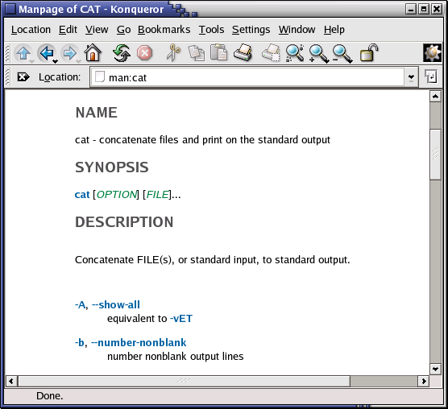

Глава 2. Быстрый старт
Аннотация
Чтобы получить максимальную отдачу от этого руководства, мы сразу же начнем с практической главы о входе в систему Linux и выполнении некоторых базовых действий.
Мы обсудим:
- Вход в систему
- Выход из системы
- Текстовый и графический режимы
- Изменение вашего пароля
- Навигацию по файловой системе
- Определение типа файла
- Просмотр текстовых файлов
- Поиск помощи
Вход в систему, активация пользовательского интерфейса и выход из системы
Введение
Для работы в системе Linux вам нужно ввести имя пользователя и пароль. Вам всегда придется проходить аутентификацию для доступа к системе. Как было уже упомянуто в упражнениях к Главе 1, "Что такое Linux?", большинство систем Linux для ПК имеют два основных режима работы в ней: либо быстрый и рассудительный текстовый режим консоли (которая выглядит как DOS с мышью, многозадачностью и многопользовательскими возможностями), либо графический режим, который выглядит лучше, но зато съедает больше системных ресурсов.
Графический режим
В настоящее время он присутствует на большинстве настольных компьютеров по умолчанию. Когда появляется запрос на ввод вашего имени пользователя, а затем, в появившемся новом окне, запрос на ввод пароля, вы должны понимать, что будете входить в систему с помощью графического режима.
Перед входом в систему, убедитесь, что курсор находится в окне ввода логина, укажите имя пользователя и пароль, затем нажмите кнопку |OK| или клавишу Enter.
 Осторожнее с аккаунтом root!
Осторожнее с аккаунтом root!
Вообще считается плохой идеей "графический" вход в систему под именем root, т.е. учетной записью администратора системы, т. к. использование графики приводит к запуску множества дополнительных программ, и в случае root'а с большим количеством дополнительных разрешений. Чтобы свести риски к минимуму, для работы в графическом режиме используйте учетную запись обычного пользователя. Достаточное сведение рисков к минимуму — это общая рекомендация; вход под учетной записью root уместен, когда действительно требуются дополнительные привилегии.
После ввода комбинации вашего имени пользователя и пароля, может потребоваться некоторое время для запуска графической среды; время зависит от скорости процессора компьютера, используемого вами программного обеспечения и ваших личных настроек.
Позже, вам будет необходимо открывать окно терминала или, для краткости, Xterm (X является названием для лежащей в основе ПО поддержки графической среды). Эту программу можно найти в меню Приложения ? Утилиты, Системные инструменты или Интернет (все зависит от того, какой оконный менеджер вы используете). Могут быть значки, которые можно использовать для быстрого запуска окна Xterm, кроме того, как правило, в контекстном меню рабочего стола (щелчок правой кнопкой мыши на фоне) вам будет предложено приложение окна терминала.
Во время работы с меню, вы заметите, что многие вещи могут быть сделаны без ввода команд с клавиатуры. Для большинства пользователей старым добрым методом обращения с компьютером будет метод "указал-и-щелкнул". Но это руководство для будущих сетевых и системных администраторов, которым необходимо будет вмешиваться в сердце системы. Такие нуждаются в более мощном инструменте, чем мышь, для решения всех задач, с которыми им придется столкнуться. Этот инструмент есть shell (командная оболочка), а в графическом режиме, открыв окно терминала, мы и запускаем нашу оболочку.
Окно терминал — это ваша панель управления системой. Почти все необходимое делается с помощью этого простого, но мощного текстового инструмента. Окно терминала, когда вы открываете его, всегда должно показывать приглашение. Этот терминал показывает стандартное приглашение, состоящее из логина пользователя и текущего рабочего каталога, обозначенного тильдой (~):
Рисунок 2.1. Окно терминала

Другая распространенная форма приглашения имеет такой вид:
[user@host dir]
Применительно к данному образцу, user - будет заменен на ваш логин, host - имя компьютера, на котором вы работаете, и dir – указание вашего текущего местонахождения в файловой системе.
Позже мы обсудим приглашения и их поведение в деталях. Сейчас достаточно знать, что приглашения могут отображать любую информацию, но они не являются частью команд, которые вы передаете вашей системе.
Для выхода из системы в графическом режиме, вам следует закрыть все окна терминала и других приложений. После этого, нажмите на значок выхода или найдите аналогичную функцию в меню. Закрывать все совсем не обязательно, система может сделать это за вас, но управление сеансами может "выложить" на экране все открытые приложения снова, когда вы войдете в систему, это занимает больше времени и не всегда является желаемым эффектом. Однако, это поведение можно изменить.
Когда вы видите экран для ввода логина, запрашивающий имя пользователя и пароль, значит, вы успешно вышли из системы.
 Gnome или KDE?
Gnome или KDE?
Мы уже упоминали несколько раз как рабочий стол Gnome так и KDE. Это два самых популярных способа управления вашим десктопом, хотя есть много, много других. Какой бы вы рабочий стол не выбрали для работы — замечательно, но до тех пор, пока вы не узнаете, как открыть окно терминала. Тем не менее, мы и впредь будем продолжать ссылаться на Gnome и KDE как наиболее популярным способам решения определенных задач.
Текстовый режим
Вы знаете, что в текстовом режиме, когда весь экран черный, на нем присутствуют (в большинстве случаев белые) только символы. При входе текстовый режим обычно показывает некоторую информацию о компьютере, на котором вы работаете, название машины и приглашение, ожидающее вашего входа:
Debian GNU/Linux 5.0 fenix tty1 fenix login: _
Вход в систему отличается от входа через графический режим в том, что вы должны нажимать клавишу Enter после ввода имени пользователя, здесь на экране нет кнопок, чтобы щелкать мышью. После этого вы должны ввести пароль, после чего снова нажать Enter. Вы не увидите никаких признаков того, что вы вводите что-то, даже звездочек, и вы не уведите движение курсора. Но это нормально для Linux и делается по соображениям безопасности.
Когда система опознает вас как законного пользователя, вы можете получить еще немного информации, называемой сообщением (message) дня, которое может быть чем угодно. Кроме того, в системах UNIX модно отображать "фразы фортуны", которые представляют собой некоторые общие мудрым или не очень (это зависит от вас) мысли. После этого вам будет предоставлена оболочка shell, с таким же приглашением, которое вы наблюдали бы в графическом режиме.
Не входите в систему как root
Также в текстовом режиме: входите как root только для установок и настроек, которые требуют безусловных прав администратора, например, добавление пользователей, установка программного обеспечения, а также выполнения сетевых и других настроек системы. После того как вы закончите, сразу выйдите их этого специального аккаунта и возобновите работу под непривилегированным пользователем. Кроме того, некоторые системы, как Ubuntu, принуждают вас использовать sudo, так что вам не нужен прямой доступ к учетной записи администратора.
Выход осуществляется путем ввода команды logout с последующим нажатием Enter. Вы успешно вышли из системы, когда снова видите экран с предложением войти.
 Кнопка питания
Кнопка питания
Хотя Linux не предназначена для отключения без применения соответствующих процедур по остановки системы, нажатие на кнопку питания равнозначно запуску тех процедур на более новых системах. Тем не менее, выключение старой системы, минуя остановочный процесс, может вызвать серьезное повреждение! Если вы хотите быть уверены, всегда используйте иконку выключения, если вы выходите из графического интерфейса; или, когда видите экран для входа в систему (где вы должны указать свое имя пользователя и пароль), осмотритесь для поиска значка выключения.
Теперь, когда мы знаем, как войти и выйти из системы, мы готовы для наших первых команд.
Абсолютные основы
Команды
Это бегло то, что нам потребуется для начала; позже мы обсудим эти команды более детально.
Таблица 2.1. Команды быстрого старта
| Команда | Значение |
| ls | Отображает список файлов в текущей рабочей директории подобно команде dir в DOS |
| cd directory | Смена директории |
| passwd | Изменение пароля текущего пользователя |
| file filename | Отображает тип файла с именем filename |
| cat textfile | Отображает содержимое textfile на экране |
| pwd | Отображает текущую рабочую директорию |
| exit or logout | Завершение сеанса |
| man command | Чтение страниц руководства о command |
| info command | Чтение info-страниц о command |
| apropos command | Поиск в базе данных whatis для строк |
Общие замечания
Вы набираете эти командыв графическом или текстовом режиме в окне терминала после приглашения, а затем нажимаете Enter.
Команды могут выдавать результат сами по себе, например, ls. Команда ведет себя иначе, если вы указываете опцию, которой, как правило, предшествует тире (-), как в ls -a. Такая же опция для другой команды может иметь совершенно иное значение. У программ GNU могут быть длинные опции, которым предшествуют два тире (--), как ls --all. У некоторых команд опций нет.
Аргумент(ы) для команды – это характеристики объекта(ов), для которых вы применяете команду. Например, в ls /etc каталог /etc является аргументом команды ls. Это означает, что вы хотите увидеть содержимое этой директории, а не той, что по умолчанию (содержимое текущего каталога) выводится, если просто набрать ls и затем нажать Enter. Некоторые команды требуют обязательного наличия аргументов, для других они необязательны.
Путем проверки справочной информации по той или иной команде, вы можете выяснить, принимает ли команда параметры (опции) и аргументы, и какие из них действительны (см. Раздел "Получение помощи").
В Linux, как и в UNIX, каталоги разделяются с использованием вперед наклоненной косой черты (слэша), то же самое используется для веб-адресов (URL). Тщательно структуру каталогов мы обсудим позже.
Символы . и .. имеют специальное значение, когда это касается каталогов. Мы попытаемся выяснить об этом значении, в ходе выполнения упражнений, и еще больше — в следующей главе.
Старайтесь избегать входа в систему и использования аккаунта системного администратора, root. Кроме того, выполнение обычной работы, решение большинства задач, включая проверку системы, сбор информации и т.д., могут быть выполнены с использованием обычной учетной записи пользователя без каких-либо специальных привилегий на все. В случае необходимости, например, при создании нового пользователя или установки нового программного обеспечения, предпочтительный способ получения прав администратора — путем переключения ID пользователей, для примера см. Раздел "Путь".
Почти все приведенные в этой книге команды могут быть выполнены без привилегий администратора системы. В большинстве случаев, когда для доступа требуются права администратора, при выполнении команды или запуске программы под непривилегированным пользователем, система предупредит вас или предложит ввести пароль root'а. После того как вы закончите, сразу завершите приложение или сессию, которые были запущены с привилегиями root.
Чтение документации должно стать вашей второй натурой. Особенно в начале важно читать системную документацию, руководства к основным командам, HOWTO и т.д. Поскольку объем документации очень велик, то невозможно включить все связанные документы. Эта книга, в целях стимулирования привычки к чтению справочных страниц, попытается направить вас к наиболее подходящей документации по каждому предмету обсуждения.
Использование возможностей Bash
Некоторые специальные комбинации клавиш позволяют делать некоторые вещи легче и быстрее в оболочке GNU, Bash, которая присутствует по умолчанию почти на любой системе Linux, см. Раздел "Shell". Ниже приведен список наиболее часто используемых возможностей; вам настоятельно советуется возыметь привычку их использования, с тем, чтобы с самого начала получить максимум от вашего познания Linux.
Таблица 2.2. Комбинации клавиш в Bash
| Клавиша или комбинация клавиш | Функция |
| Ctrl+A | Перемещение курсора в начало командной строки. |
| Ctrl+C | Завершение запущенной программы и возврат к приглашению оболочки, см. Глава 4. Процессы. |
| Ctrl+D | Выход из текущей сессии оболочки, равносильно набору exit или logout. |
| Ctrl+E | Перемещает курсор к концу командной строки. |
| Ctrl+H | Генерирует символ возврата (backspace). |
| Ctrl+L | Очищает данный терминал. |
| Ctrl+R | Поиск в истории команд, см. Раздел "Команда grep". |
| Ctrl+Z | Приостановка программы, см. Глава 4. Процессы. |
| Стрелка влево и стрелка вправо | Перемещает курсор в командной строке на одну позицию влево или вправо, так что вы можете вставлять символы не только в начало и конец. |
| Стрелка вверх и стрелка вниз | Обзор истории. Перейдите на строку, которую вы хотите повторить, если необходимо отредактируйте детали, и нажмите Enter; это сэкономит время. |
| Стрелка вверх и стрелка вниз | Обзор истории. Перейдите на строку, которую вы хотите повторить, если необходимо отредактируйте детали, и нажмите Enter; это сэкономит время. |
| Shift+PageUp и Shift+PageDown | Обзор буфера терминала (просмотр текста, который был «прокручен» на экране). |
| Tab | Завершение команды или имени файла; когда возможны несколько вариантов, система издаст сигнал из колонок, или, если слишком много возможных вариантов, спросит вас, хотите ли вы увидеть их все. |
| Tab Tab | Показывает возможные варианты завершения файла или команды. |
Последние два пункта в таблице выше, могут потребовать дополнительного пояснения. Например, если вы хотите перейти в каталог directory_with_a_very_long_name, вы не собираетесь набирать такое очень длинное имя, нет. Просто наберите в командной строке cd dir, а затем нажмите Tab и оболочки завершит имя за вас, если нет других файлов, начинающихся с тех же трех символов. Конечно, если нет других элементов, начинающихся с "d", то вы, также можете просто ввести cd d и нажать Tab. Если более чем один файл начинается с тех же символов, оболочка просигнализирует вам об этом, после чего вы можете нажать клавишу Tab дважды через короткий промежуток времени, и shell представит варианты, которые у вас есть:
your_prompt> cd st starthere stuff stuffit
В приведенном выше примере, если вы введете "a" после первых двух символов и нажмете Tab еще раз, то поскольку нет других возможных вариантов, оболочка завершает имя каталога без необходимости ввода строки "rthere":
your_prompt> cd starthere
Конечно, вам все равно придется нажимать клавишу Enter, чтобы согласиться с выбором.
В том примере если вы введете "u", а затем нажмете Tab, оболочка добавит за вас "ff", но затем она запротестует снова, потому что возможны несколько вариантов. Если вы нажмете Tab Tab еще раз, то увидите варианты; если вы введете один или более символов, которые делают выбор однозначным для системы, и нажмете Tab опять, или Enter, когда вы дойдете до конца имени выбираемого вами файла, shell завершит имя файла и переместит вас в тот каталог – если это действительно имя директории.
Это работает для всех имен файлов, которые являются аргументами команд.
То же самое касается завершения имени команды. При вводе ls и последующем двойном нажатии клавиши Tab, выведется список всех команд из вашего PATH (см. Раздел "Путь"), которые начинаются с этих двух символов:
your_prompt> ls ls lsdev lspci lsraid lsw lsattr lsmod lspgpot lss16toppm lsb_release lsof lspnp lsusb
Получение помощи
Будьте осторожны
GNU/Linux приветствует самостоятельность. И как обычно в этой системе есть несколько способов достижения цели. Привычный способ получения помощи — это найти того, кто знает; однако несмотря на терпеливость и миролюбивость сообщества пользователей Linux, почти все будут предполагать, что вы пытались использовать один или несколько описанных в данном разделе методов, прежде чем спрашивать их; способы выражения этой точки зрения могут быть достаточно грубыми, если окажется, что вы не следуете этому основному правилу.
Страницы man
Многие начинающие пользователи бояться справочных (man) страниц, потому что они ошеломляют количеством информации. Однако они хорошо структурированы, вы можете убедиться в этом на примере ниже: man man.
Чтение man-страниц обычно происходит в окне терминала в графическом режиме, или, если вы предпочитаете, прямо в текстовом режиме. Введите эту команду после приглашения и нажмите Enter:
yourname@yourcomp ~> man man
Документация для man отобразится на экране после нажатия Enter:
man(1) man(1) NAME man - format and display the on-line manual pages manpath - determine user's search path for man pages SYNOPSIS man [-acdfFhkKtwW] [--path] [-m system] [-p string] [-C config_file] [-M pathlist] [-P pager] [-S section_list] [section] name ... DESCRIPTION man formats and displays the on-line manual pages. If you specify section, man only looks in that section of the manual. name is normally the name of the manual page, which is typically the name of a command, function, or file. However, if name contains a slash (/) then man interprets it as a file specification, so that you can do man ./foo.5 or even man /cd/foo/bar.1.gz. See below for a description of where man looks for the manual page files. OPTIONS -C config_file lines 1-27
Для просмотра следующей страницы нужно нажать пробел. Вы можете вернуться на предыдущую страницу, используя клавишу b. Когда вы дойдете до конца, man обычно закрывается, и вы возвращаетесь назад к приглашению. Нажмите q, если вы хотите покинуть man-страницу, не дойдя до конца, или если просмотр автоматически не завершается в конце страницы.
Пейджеры
Имеющиеся комбинации клавиш для работы с man-страницами зависят от пейджера, используемого в вашем дистрибутиве. Большинство дистрибутивов используют less для просмотра man-страниц и их прокрутки. См. Раздел "Меньше (less) значит больше" для более подробной информации о пейджерах.
Каждая man-страница обычно содержит несколько стандартных разделов (что можно наблюдать на примере man man):
- Первая строка содержит имя команды, о которой вы читаете, и id раздела, в котором эта man-страница находится. Man-страницы упорядочены по разделам. Команды могут иметь несколько man-страниц, например, man-страницу из пользовательского раздела, man-страницу из раздела администратора системы, и man-страницу из раздела для программиста.
- Имя (name) команды и краткое описание приводятся в том виде, который используется при индексировании man-страниц. Вы можете просматривать эту базу при поиске любой строки с помощью команды apropos.
- Обзор (synopsis) команды представляет специальные обозначения всех опций и/или аргументы, которые эта команда может принимать. Вы можете считать опции способом выполнения команды. Аргументы это то, по отношению к чему вы ее выполняете. У некоторых команд нет опций и аргументов. Необязательные опции и аргументы располагаются между "[" и "]", что указывает на то, что они могут быть опущены.
- Дается более длинное описание (description) команды.
- Список опций (options) с их описанием. Обычно опции могут быть скомбинированы. Если это не так, раздел уведомит вас об этом.
- Окружение (environment) описывает переменные оболочки, которые влияют на поведение этой команды (это есть не у всех команд).
- Иногда предусмотрены разделы специфичные для данной команды.
- Ссылки на другие man-страницы приводится в разделе “SEE ALSO” ("смотри также"). Между круглыми скобками есть номер раздела, в котором находится справочная страница для данной команды. Опытные пользователи часто переходят к разделу "SEE ALSO" используя команду /, за которой следует строка поиска see и нажимают Enter.
- Также обычно имеется информация об известных ошибках (аномалиях), а также куда можно сообщить о новых ошибках, если вы их найдете.
- Также может содержаться информация об авторе и авторских правах.
У некоторых команд есть несколько man-страниц. Например, у команды passwd есть man-страница в разделе 1, а другая — в разделе 5. По умолчанию отображается man-страница с наименьшим номером. Если вы хотите увидеть другой раздел, а не тот, что по умолчанию, укажите его после команды man:
man 5 passwd
Если вы хотите увидеть все справочные страницы о команде, одну за другой, используйте с man опцию -a:
man -a passwd
Таким образом, когда вы дойдете до конца первой man-страницы и нажмите пробел, будет отображаться man-страница из следующего раздела.
Больше информации
Страницы Info
В дополнение к man-страницам, вы можете почитать о команде info-страницы, используя команду info. Они обычно содержат более свежую информацию и несколько проще в использовании. Man-страницы некоторых команд ссылаются на info-страницы.
Начните с ввода info info в окне терминала:
File: info.info, Node: Top, Next: Getting Started, Up: (dir) Info: An Introduction ********************* Info is a program, which you are using now, for reading documentation of computer programs. The GNU Project distributes most of its on-line manuals in the Info format, so you need a program called "Info reader" to read the manuals. One of such programs you are using now. If you are new to Info and want to learn how to use it, type the command `h' now. It brings you to a programmed instruction sequence. To learn advanced Info commands, type `n' twice. This brings you to `Info for Experts', skipping over the `Getting Started' chapter. * Menu: * Getting Started:: Getting started using an Info reader. * Advanced Info:: Advanced commands within Info. * Creating an Info File:: How to make your own Info file. --zz-Info: (info.info.gz)Top, 24 lines --Top------------------------------- Welcome to Info version 4.2. Type C-h for help, m for menu item.
Используйте клавиши со стрелками для просмотра текста и перемещения курсора на строку, начинающуюся со звездочки и содержащую ключевое слово, о котором вы хотите получить информацию, и затем нажмите Enter. Используйте клавиши P и N для перехода к предыдущей или следующей теме. Пробел переместит вас на одну страницу дальше, независимо от того, начинается ли новая тема или страница info для другой команды. Используйте Q для выхода. Программа info содержит больше информации.
Команды whatis и apropos
Краткие пояснения к командам доступны путем использования команды whatis, как в примере ниже:
[your_prompt] whatis ls ls (1) - list directory contents
Она отображает краткую информацию о команде, и первый раздел в структуре man-страниц, который содержит соответствующую страницу.
Если вы не знаете, где начать и какую man-страницу читать, команда apropos даст дополнительную информацию. Скажем, вы не знаете, как запустить браузер, тогда вы можете ввести следующую команду:
another prompt> apropos browser Galeon [galeon](1) - gecko-based GNOME web browser lynx (1) - a general purpose distributed information browser for the World Wide Web ncftp (1) - Browser program for the File Transfer Protocol opera (1) - a graphical web browser pilot (1) - simple file system browser in the style of the Pine Composer pinfo (1) - curses based lynx-style info browser pinfo [pman] (1) - curses based lynx-style info browser viewres (1x) - graphical class browser for Xt
После нажатия Enter вы увидите, что большая часть браузеров входят в состав вашей ОС: и не только веб-браузеры, но также файловые и FTP браузеры, браузеры для документации. Если у вас установлены пакеты разработчика, то могут быть также сопровождающие man-страницы, касающиеся написания программ, связанных с браузерами. Как правило, команды с man-страницы находится в первом разделе, поэтому помечены "(1)", что соответствует их использованию под пользователем. Пользователь, который написал выше команду apropos, может в результате попытаться выполнить команды galeon, lynx или opera, т.к. они очевидно связаны с просмотром World Wide Web.
Опция --help
Большинство команд GNU поддерживают --help, которая выдает краткое пояснение того, как использовать команду, и список доступных опций. Ниже результат выдачи с этой опцией для команды cat:
userprompt@host: cat --help
Usage: cat [OPTION] [FILE]...
Concatenate FILE(s), or standard input, to standard output.
-A, --show-all equivalent to -vET
-b, --number-nonblank number nonblank output lines
-e equivalent to -vE
-E, --show-ends display $ at end of each line
-n, --number number all output lines
-s, --squeeze-blank never more than one single blank line
-t equivalent to -vT
-T, --show-tabs display TAB characters as ^I
-u (ignored)
-v, --show-nonprinting use ^ and M- notation,
except for LFD and TAB
--help display this help and exit
--version output version information and exit
With no FILE, or when FILE is -, read standard input.
Report bugs to .
Помощь в графическом режиме
Если вы предпочитаете графический интерфейс пользователя, то не отчаивайтесь. Konqueror, файловый менеджер KDE по умолчанию, обеспечивает безболезненный и красочный доступ к man и info-страницам. Вы можете попробовать "info:info" в адресной строке, и сможете посмотреть info-страницу о команде info. Также "man:ls" представит вам man-страницу команды ls. У вас даже есть завершение имени команды: вы увидите man-страницы для всех команд, начинающихся с "ls" прокрутив меню. Ввод "info:/dir" в адресной строке отображает все info-страницы, расположенные во вспомогательных категориях. Превосходен включенный в справочник Konqueror Help-контент. Запускается из меню или набрав команду konqueror в окне терминала c последующим нажатием Enter; см. скриншот ниже.
Рисунок 2.2. Konqueror как help-браузер

Help-браузер в Gnome также очень удобный. Вы можете запустить его выбрав Приложения ? Справка в меню Gnome, нажав спасателей значок на вашем рабочем столе, либо введя команду gnome-help в окне терминала. Системную документацию и man-страницы легче просматривать в простом интерфейсе.
Файловый менеджер nautilus обеспечивает поиск по индексу man- и info-страниц, они легко просматриваются и взаимосвязаны. Nautilus запускается из командной строки, или нажатием на значке вашего домашнего каталога, или из меню Gnome.
Большим преимуществом GUI для системной документации является то, что вся информация полностью взаимосвязана, так что вы можете переходить по ссылкам в разделе "SEE ALSO" ("См. также") и там, где появляются ссылки на другие man-страницы, и таким образом просматривать и приобретать знания без перерыва в течение нескольких часов.
Исключения
Некоторые команды не имеют отдельной документации, т.к. являются частью другой команды. cd, exit, logout и pwd как раз такие исключения. Они часть вашей программы shell и называются встроенными командами shell. Для получения информации о них обратитесь к man- или info-страницам вашей оболочки. Большинство начинающих пользователей Linux имеют Bash оболочку. См. Раздел "Shell" для дополнительной информации об оболочках.
Если вы изменяете первоначальную системную конфигурацию, то все равно еще может быть возможным, что man-страницы существуют, но не видны, т.к. окружение вашей оболочки изменилось. В этом случае вам нужно проверить переменную MANPATH. Как это сделать описано см. Раздел "Экспорт переменных".
Некоторые программы или пакеты содержат только набор инструкций или ссылки в каталог /usr/share/doc. Для их отображения см. Раздел "Другие способы просмотра содержимого".
В худшем случае, вы можете случайно удалить документы из системы (надеемся случайно, потому что это очень плохая идея делать это целенаправленно). В этом случае, попробуйте сначала убедиться, что там действительно нет ничего подходящего, используя инструмент поиска (прочитайте Раздел "Поиск файлов"). Если окажется именно так, то возможно, вам придется переустановить пакет, который содержит команду, к которой относится документация, см. Раздел "Установка нового ПО".
Резюме
Linux по традиции работает в текстовом и графическом режимах. Поскольку мощный процессор и оперативная память не так дорого стоят в наши дни, каждый пользователь Linux может позволить себе работать в графическом режиме и обычно так и делает. Это не означает, что вам не надо знать о текстовом режиме: мы будем работать в текстовом окружении на протяжении этого курса, используя окно терминала.
Linux подталкивает своих пользователей к приобретению знаний и независимости. Конечно, для достижения этой цели вам придется читать много документации; поэтому вы заметите, что мы ссылаемся на дополнительную документацию для почти каждой команды, инструмента и проблемы, встречающейся в этой книге. Чем больше документов вы читаете, тем легче будет становиться в дальнейшем, и тем быстрее вы будете перелистывать руководства. Как можно скорее сделайте чтение документации привычкой. Когда вы не знаете ответа на вопрос, обращение к документации должно стать второй натурой.
Мы уже узнали некоторые команды:
Таблица 2.3. Новые команды из главе 2: Основы
| Команда | Значение |
| apropos | Поиск информации о команде или по теме. |
| cat | Показывает содержимое одного или более файлов. |
| cd | Переход в другую директорию. |
| exit | Выход из сессии оболочки shell. |
| file | Получение информации о содержании файла. |
| info | Чтение info-страниц о команде. |
| logout | Выход из сессии shell. |
| ls | Просмотр содержимого каталога. |
| man | Чтение страниц руководств о команде. |
| passwd | Изменение пароля. |
| pwd | Отображение текущей рабочей директории. |
Упражнения
Многое мы узнаем, совершая ошибки и наблюдая, как что-то может пойти не так. Эти упражнения придуманы таким образом, чтобы заставить вас читать некоторые сообщения об ошибках. Порядок, в котором следует выполнять эти упражнения, важен.
Не забывайте использовать возможности Bash в командной строке: выполняя упражнения, старайтесь вводить как можно меньше символов насколько это возможно!
Подключение и отключение
- Определите, работаете ли вы в текстовом или графическом режиме.
Я работаю в текстовом/графическом режиме. (ненужное зачеркнуть) - Войдите под своим именем пользователя и паролем, которые вы создали для себя во время установки.
- Выйдите.
- Войти снова, используя несуществующее имя пользователя
-> Что случилось?
Пароли
Войти снова под вашим именем пользователя и паролем.
- Измените пароль на P6p3.aa! и нажмите клавишу Enter.
-> Что произошло? - Попробуйте еще раз, но на этот раз введите пароль, который до смешного легок, как 123 или ааа.
-> Что случилось? - Попробуйте еще раз, на этот раз без ввода пароля, а просто нажав клавишу Enter.
-> Что случилось? - Попробуйте команду psswd вместо passwd
-> Что случилось?
Новый пароль.
Пока вы снова не измените ваш пароль на прежний, т.е. тот, который был до этого упражнения, он будет "P6p3.aa!". Измените ваш пароль после этого упражнения!
Обратите внимание, некоторые системы могут не позволить снова изменить пароль на прежний в течение определенного времени или определенного количества изменений пароля, или в обоих случаях.
Каталоги
Вот несколько упражнений, которые помогут вам освоиться.
- Введите команду cd blah
-> Что случилось? - Введите команду cd ..
Помните о пробеле между "cd" и ".."! Используйте команду pwd.
-> Что произошло? - Получите список содержимого каталога с помощью команды ls.
-> Что вы видите?
-> Как вы думаете что это?
-> Проверьте, используя команду pwd. - Введите команду cd.
-> Что случилось? - Повторите шаг 2 два раза.
-> Что случилось? - Отобразите содержимое этой директории.
- Попробуйте выполнить команду cd root
-> Что случилось?
-> В какие каталоги у вас есть доступ? - Повторите шаг 4.
Знаете ли вы еще один путь узнать, где вы сейчас?
Файлы
- Перейдите в каталог /, а затем в etc . Наберите ls; если выдача больше, чем ваш экран, сделайте окно больше, или попробуйте Shift + PageUp и Shift + PageDown.
- Файл inittab содержит ответ на первый вопрос в этом списке. Попробуйте на нем команду file.
-> Тип файла inittab — это ..... - Используйте команду cat inittab и прочитайте этот файл.
-> Какой режим у вашего компьютера по умолчанию? - Вернитесь в вашу домашнюю директорию, используя команду cd.
- Введите команду file .
-> Вам это помогло определить смысл "."? - Можете ли вы посмотреть "." с помощью команды cat?
- Отобразите помощь для программы cat, используя опцию --help. С помощью опции для нумерации выходных линий посчитайте, сколько пользователей перечислено в файле /etc/passwd.
Получение помощи
- Прочитайте man ls
- Прочитайте info passwd
- Введите команду apropos pwd
- Попробуйте man или info для cd
-> Как бы вы найдете более подробную информацию о cd? - Прочитайте ls --help и попробуйте выйти.